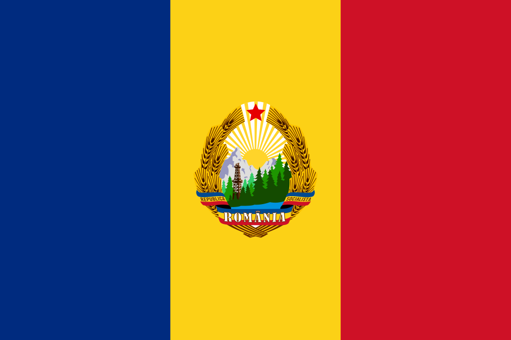
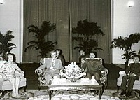

România
România comunistă 1947-1989 este o denumire neoficială, folosită uneori cu referire la perioada comunistă din istoria României în care țara a fost cunoscută cu denumirile oficiale de Republica Populară Romînă, Republica Populară Română[1] și respectiv, Republica Socialistă România. În această perioadă, Partidul Comunist Român (care s-a numit Partidul Muncitoresc Român între 1948-1965) a fost, de facto, partidul politic unic care a dictat prin guvern viața publică în România.

După încheierea celui de-al Doilea Război Mondial, Uniunea Sovietică a făcut presiuni pentru includerea în guvernele postbelice a unor reprezentanți ai Partidul Comunist din România, recent reintrat în legalitate (partidul fusese interzis în 1924 pe motivul acceptării tezei cominterniste „a dreptului popoarelor oprimate din România imperialistă la autodeterminare până la despărțirea de stat”)[2], în vreme ce liderii necomuniști erau eliminați în mod constant din viața politică.
Perioada Republicii Populare Române
În primii ani de dominație comunistă resursele României au fost exploatate de sovietici prin intermediul companiilor mixte româno-sovietice SovRom, înființate după încheierea conflagrației mondiale pentru a gestiona plata uriașei datorii de război către URSS, stabilită prin Tratatul de Pace de la Paris la suma deloc neglijabilă de 300.000.000 dolari (la valoarea din 1938, echivalentul a cca. 5 miliarde de dolari la valoarea din 2014). SovRom-urile nu au fost ceva specific românesc, sovieticii înființând asemenea societăți mixte în toate țările care trebuiau să le plătească despăgubiri de război (în Finlanda, de pildă, a fost înființată o societate mixtă pentru producerea construcțiilor de lemn numită Puutalo Oy). Un mare număr de oameni (estimările variază de la 137 [3] la mai multe zeci de mii [3]) au fost închiși din motive politice. Există mărturii despre numeroase cazuri de abuzuri, asasinate sau torturi aplicate unui mare număr de oameni, în principal în cazurile oponenților politici.[4]. La începutul deceniului al șaptelea (1960 - 1970), guvernul român a început să treacă la acțiuni pentru creșterea gradului de independență față de Uniunea Sovietică.
Epoca Nicolae Ceaușescu
După decesul lui Gheorghe Gheorghiu-Dej, survenit în martie 1965, Nicolae Ceaușescu a fost ales noul Secretar General al PCR (în 1965) și șef al statului în 1967. Denunțarea invaziei sovietice în Cehoslovacia din 1968 și scurta relaxare a represiunii interne, l-a ajutat pe noul lider comunist de la București să-și creeze o imagine pozitivă în țară și în Occiden
Rapida creștere economică, susținută prin mari credite obținute din vest, nu a putut fi menținută și a scăzut gradual în intensitate până s-a ajuns la austeritate și la represiune internă, care au avut ca rezultat Revoluția din decembrie 1989 și prăbușirea regimului comunist și în România.
